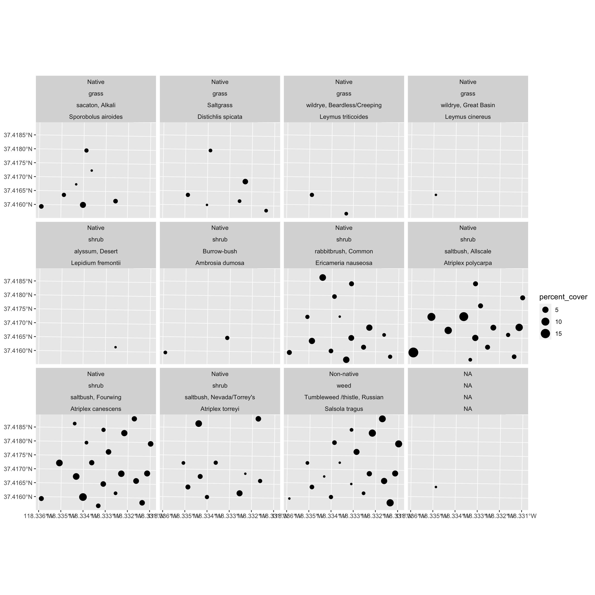
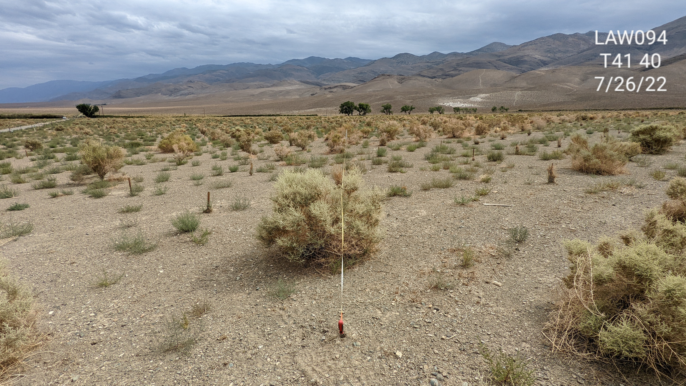
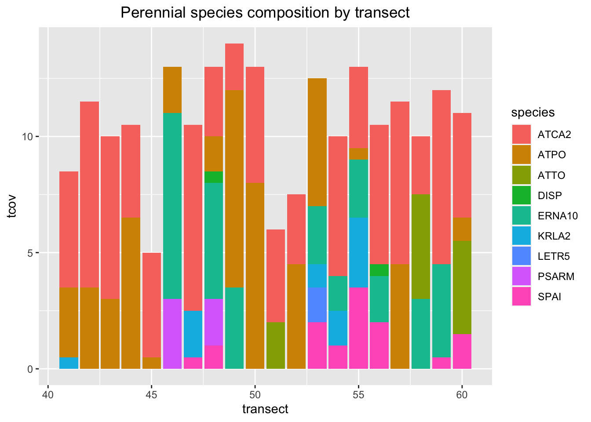
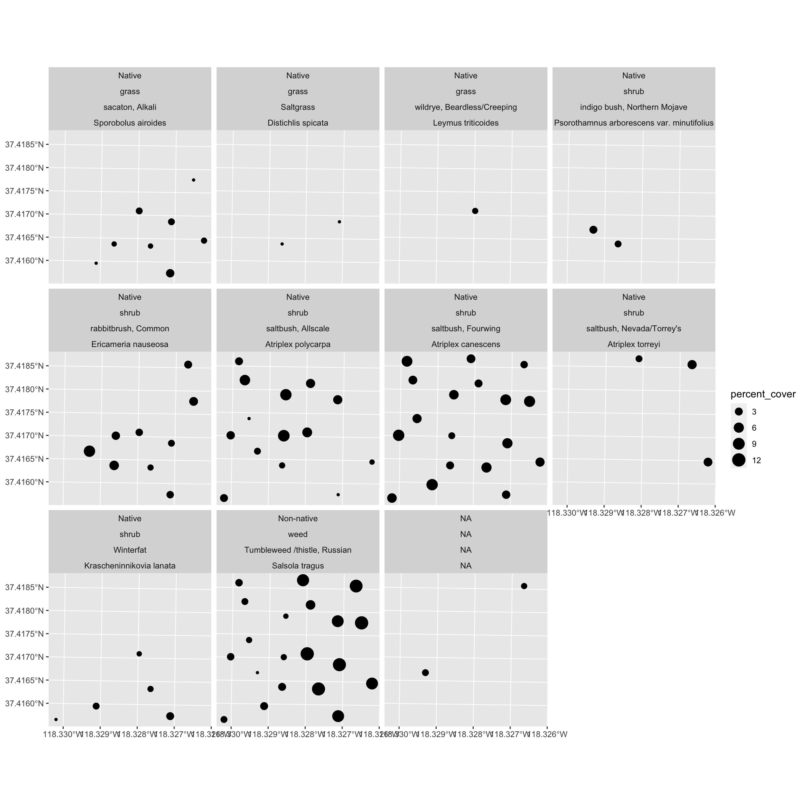
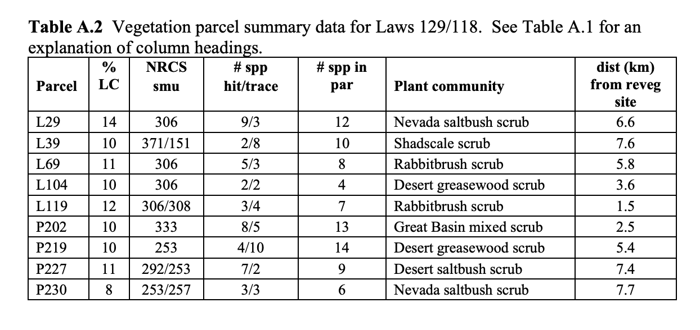
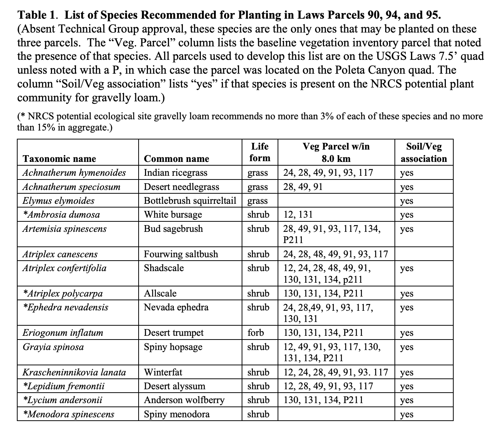
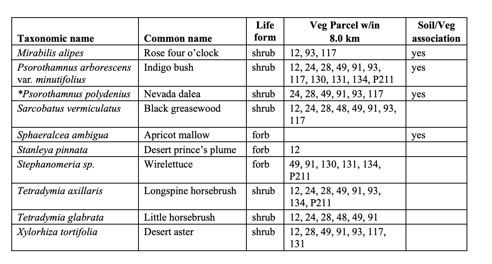

Evaluation of LADWP’s Revegetation Monitoring Report for Land Removed from Irrigation: Laws Parcels 090, 095,129, and Abandoned Land Parcel 094
Background
In November 2022, Inyo County Water Departmemnt (ICWD) received Los Angeles Department of Water and Power’s (LADWP) report entitled “Revegetation Monitoring Report for Land Removed from Irrigation: Laws Parcels 090, 095,129, and Abandoned Land Parcel 094” (hereafter 2022 report).
As part of the “Irrigation Project in the Laws Area” negative declaration of environmental impact (herefter Laws MND), a plan to revegetate lands removed from irrigation was outlined in attachment 4 of the Laws MND titled. “Revegetation Plans for Lands Removed from Irrigation Laws Parcels 90, 95, and 129 And Abandoned Agricultural Land Parcel 94” (hereafter 2003 Plan). This 2003 plan explains:
There are three parcels in the Laws Ranch lease that were previously irrigated and will not be irrigated in the future under the plan for re-irrigation of the ranch.
These parcels are Laws 90, 95 and 129. A portion of Laws 118 surrounds parcel 129. This area will be fenced and revegetation will be augmented, as needed, in conjunction with parcel 129. Laws parcel 94, which was mapped as abandoned agricultural land, will also be revegetated.
Under these plans, the parcels will be revegetated with the goal of restoring native vegetation that is similar in cover, and species composition to nearby sites. The prescribed conditions are to be established on each parcel by 2013, and must be present two years after established with no on-site revegetation activities.–2003 Plan
The 2022 report explains that LADWP and consultants measured transects in Laws 90, 94, 95, and 129 in July of 2022; and analysis of those data allowed determining the 2003 revegetation goals have been met as of the last half of July 20221. Irrigation was not supplied after June 2022; and because vegetation goals were met in July, the two-year period to test whether the established shrubs can persist without summer drip irrigation official began July 2022 - triggering re-measurement in July 2024 - at which point the 2024 data will determine whether goals have been sustained for two years or 730 days since first measurements2. At this point, LADWP will consider the project complete:
“If a parcel meets the goals after the two year rest, no further revegetation activities will be necessary and the parcel will be considered complete”. – LADWP 2022
Data supporting the report collected by LADWP in summer 2022 was received by ICWD staff in a digital excel file January 27th 2023.
Tasks
The purpose of this report (hereafter 2023 data summary) is to:
- Evaluate the data provided to ICWD (collected in July 2022 by LADWP staff and consultants) against the various cover and composition goals of the 2003 plan3. Specifically, compute average perennial cover at the transect and parcel scale, enumerate the number of species detected on the transects and parcel in total, determine whether or not 5-6 of those species were detected at the 0.05-0.075% cover level for the parcel (2-3 out of 4,000 possible hits), and whether or not each transect minimally had 2% cover (1 hit out of 200 possible).
- Plot transect-level composition and species spatial distribution. Specifically, for each parcel, with discrete transect identity on the x-axis, stack perennial species cover in bar plots for all transects on the y-axis. Color the stacked species blocks by species code. Second, for each parcel, facet by species so each species has it’s own plot and map the transect locations and size the points proportional to the species-level transect % cover.
2022 Data and 2003 reveg goals
After examining the data provided to ICWD against the 2003 MND Revegetation Plan revegetation goals, LADWP’s reporting comports with ICWD’s independent data summaries in that cover goals and species richness was satisified based on LADWP’s 2022 data collection. See Table 1 for an overview of cover values for all parcels. Species level tables for each parcel, species composition charts for each transect and spatial maps of species transect cover are located in the following sections: Laws 90 (Table 2, Figure 1, Figure 2), Laws 95 (Table 3, Figure 3, Figure 4), Laws 94 (Table 4, Figure 5, Figure 6), and Laws 129 (Table 5, Figure 7, Figure 8 ).
| parcel | TLC | Cover | Shrub | Herb | Grass | n.transects | goal_above_below |
|---|---|---|---|---|---|---|---|
| LAW090 | 19.900 | 15.725 | 15.300 | 0.075 | 0.225 | 20 | 5.72 |
| LAW094 | 16.775 | 10.650 | 9.925 | 0.000 | 0.725 | 20 | 0.65 |
| LAW095 | 15.025 | 12.200 | 11.000 | 0.000 | 1.200 | 20 | 2.20 |
| LAW129 | 19.075 | 16.625 | 16.225 | 0.325 | 0.075 | 20 | 6.62 |
LAW090

The goal is a native perennial vegetation cover of at least 10% by the year 2013 composed of at least ten different native species (including a native grass). For parcel 90, there should be at least three “hits” for at least six different native perennial species out of the total of all the readings of all the permanent transects in the parcel. The other four native perennial species should be observed as present on the parcel, but do not have to be “hit” on any transect.-2003 Plan
- 2003 Cover Goal:
10% cover – Actual in 2022: - 16% cover - 2003 Species Goal:
10species – Actual on transect 2022:134 - 2003 Composition Goal:
6species with three hits – Actual in 2022:10species with three hits (0.075% cover each)
| CommonName | Species | Percent_Cover | |
|---|---|---|---|
| Perennial | |||
| saltbush, Allscale | Atriplex polycarpa | 6
| |
| saltbush, Fourwing | Atriplex canescens | 4
| |
| saltbush, Nevada/Torrey's | Atriplex torreyi | 2
| |
| rabbitbrush, Common | Ericameria nauseosa | 2
| |
| Winterfat | Krascheninnikovia lanata | 0
| |
| Greasewood | Sarcobatus vermiculatus | 0
| |
| sacaton, Alkali | Sporobolus airoides | 0
| |
| cottonwood, Fremont's /Alamo | Populus fremontii | 0
| |
| sagebrush, Big | Artemisia tridentata | 0
| |
| heliotrope, Salt | Heliotropium curassavicum | 0
| |
| ricegrass, Indian | Achnatherum hymenoides | 0
| |
| aster, Shrubby alkali | Machaeranthera carnosa | 0
| |
| indigo bush, Northern Mojave | Psorothamnus arborescens var. minutifolius | 0
| |
| total | — | — | 15.7 |
| n | — | — | 13.0 |
| Annual | |||
| Tumbleweed /thistle, Russian | Salsola tragus | 4
| |
| bassia, Fivehook | Bassia hyssopifolia | 0
| |
| total | — | — | 4.2 |
| n | — | — | 2.0 |
LAW095
The goal is a native perennial vegetation cover of at least 10% by the year 2013 composed of at least ten different native species (including a native grass). For parcels 94 and 95, there should be at least two “hits” for at least six different native perennial species out of the total of all the readings of all the permanent transects in the parcel. The other four native perennial species should be present on the parcel, but do not have to be “hit” on any transect.-2003 Plan
- 2003 Cover Goal:
10% cover – Actual in 2022: - 12% cover - 2003 Species Goal:
10species – Actual on transect 2022:105 - 2003 Composition Goal:
6species with two hits – Actual in 2022:8species > two hits (0.05% cover each)
| CommonName | Species | Percent_Cover | |
|---|---|---|---|
| Perennial | |||
| saltbush, Allscale | Atriplex polycarpa | 4
| |
| saltbush, Fourwing | Atriplex canescens | 3
| |
| rabbitbrush, Common | Ericameria nauseosa | 2
| |
| saltbush, Nevada/Torrey's | Atriplex torreyi | 1
| |
| sacaton, Alkali | Sporobolus airoides | 1
| |
| Saltgrass | Distichlis spicata | 0
| |
| Burrow-bush | Ambrosia dumosa | 0
| |
| wildrye, Beardless/Creeping | Leymus triticoides | 0
| |
| alyssum, Desert | Lepidium fremontii | 0
| |
| wildrye, Great Basin | Leymus cinereus | 0
| |
| total | — | — | 12.2 |
| n | — | — | 10.0 |
| Annual | |||
| Tumbleweed /thistle, Russian | Salsola tragus | 3
| |
| total | — | — | 2.8 |
| n | — | — | 1.0 |
| NA | |||
| NA | NA | 0
| |
| total | — | — | 0.0 |
| n | — | — | 1.0 |

LAW094

The goal is a native perennial vegetation cover of at least 10% by the year 2013 composed of at least ten different native species (including a native grass). For parcels 94 and 95, there should be at least two “hits” for at least six different native perennial species out of the total of all the readings of all the permanent transects in the parcel. The other four native perennial species should be present on the parcel, but do not have to be “hit” on any transect.-2003 Plan
- 2003 Cover Goal:
10% cover – Actual in 2022: - 11% cover - 2003 Species Goal:
10species – Actual on transect 2022:96 - 2003 Composition Goal:
6species with two hits – Actual in 2022:9species > two hits (0.05% cover each)
| CommonName | Species | Percent_Cover | |
|---|---|---|---|
| Annual | |||
| Tumbleweed /thistle, Russian | Salsola tragus | 6
| |
| total | — | — | 6.0 |
| n | — | — | 1.0 |
| Perennial | |||
| saltbush, Fourwing | Atriplex canescens | 5
| |
| saltbush, Allscale | Atriplex polycarpa | 3
| |
| rabbitbrush, Common | Ericameria nauseosa | 2
| |
| sacaton, Alkali | Sporobolus airoides | 1
| |
| saltbush, Nevada/Torrey's | Atriplex torreyi | 1
| |
| Winterfat | Krascheninnikovia lanata | 0
| |
| indigo bush, Northern Mojave | Psorothamnus arborescens var. minutifolius | 0
| |
| wildrye, Beardless/Creeping | Leymus triticoides | 0
| |
| Saltgrass | Distichlis spicata | 0
| |
| total | — | — | 10.7 |
| n | — | — | 9.0 |
| NA | |||
| NA | NA | 0
| |
| total | — | — | 0.2 |
| n | — | — | 1.0 |


LAW118 and LAW129
For parcel 129/118, there should be at least two “hits” for at least five different native perennial species out of the total of all the readings of all the permanent transects in the parcels. The other three native perennial species should be present on the parcel, but do not have to be “hit” on any transect. – 2003 Plan
- 2003 Cover Goal:
10% cover – Actual in 2022: - 17% cover - 2003 Species Goal:
8species – Actual on transect 2022:97 - 2003 Composition Goal:
5species with two hits – Actual in 2022:8species > two hits (0.05% cover each)
| CommonName | Species | Percent_Cover | |
|---|---|---|---|
| Perennial | |||
| rabbitbrush, Common | Ericameria nauseosa | 11
| |
| saltbush, Fourwing | Atriplex canescens | 3
| |
| saltbush, Allscale | Atriplex polycarpa | 2
| |
| bindweed, Field | Convolvulus arvensis | 0
| |
| Winterfat | Krascheninnikovia lanata | 0
| |
| weed, Poverty | Iva axillaris | 0
| |
| sacaton, Alkali | Sporobolus airoides | 0
| |
| saltbush, Nevada/Torrey's | Atriplex torreyi | 0
| |
| Saltgrass | Distichlis spicata | 0
| |
| total | — | — | 16.6 |
| n | — | — | 9.0 |
| Annual | |||
| Tumbleweed /thistle, Russian | Salsola tragus | 2
| |
| horseweed, Canada | Conyza canadensis | 0
| |
| bee plant, Yellow | Cleome lutea | 0
| |
| total | — | — | 2.4 |
| n | — | — | 3.0 |
| Annual/Biennial | |||
| sweetclover, Yellow | Melilotus officinalis | 0
| |
| total | — | — | 0.0 |
| n | — | — | 1.0 |

Recommendations
ICWD can acquire annual UAV-aerial imagery in house to document vegetation changes in 2023, 2024, and 2025. Field sampling in 2025 would provide a full two growing seasons without irrigation (2023, 2024) - before assessing the whether cover goals can be maintained without irrigation.
Appendix
In reference to the 2003 plan:
In preparing this plan, vegetation cover, composition, and species lists were determined by reviewing the LADWP 1984-87 vegetation inventory data for parcels in the vicinity (Appendix II) and located in the same ecological (range) site class in the Draft Benton-Owens Valley Soil Survey, hereafter referred to as the NRCS (Natural Resources Conservation Service 1994). – 2003 Plan
In addition, species lists and other information from the NRCS descriptions were incorporated (Appendix I). –2003 Plan
Reference Parcel Cover Composition
Live cover, number of species hit and detected (trace), number of species in parcel, plant community classification and distance from revegetation site.
Laws 90, 94, 95
Laws 129

Reference Species
Taxonomic, common name, life form, vegetation parcel containing species, soil compatibility.
Laws 90, 94, 95


Laws 129
Footnotes
LADWP indicated that no irrigation occurred after approximately June 2022 owing to the summer rains in 2022 augmenting soil moisture↩︎
The timing of this materializes as a test of the full 2023 growing season without irrigation and most of 2024 through July, but not August 2024 - which would be the second full complete growing season.↩︎
This report is intended to provide technical analysis within the narrow scope of the 2022 data and the specific 2003 plan success metrics.↩︎
Additional trace species may be recorded on paper datasheets that have been scanned but those species are not included here.↩︎
Additional trace species may be recorded on paper datasheets that have been scanned but those species are not included here.↩︎
additional LYCO or ENFA not matched to species list adds another species to the list detected on transects. add this to todo update species list. Additional trace species may be recorded on paper datasheets that have been scanned but those species are not included here.↩︎
additional LYCO or ENFA not matched to species list adds another species to the list detected on transects. add this to todo update species list. Additional trace species may be recorded on paper datasheets that have been scanned but those species are not included here.↩︎
Citation
@report{nelson2023,
author = {Zach Nelson},
publisher = {Inyo County Water Department},
title = {Evaluation of {LADWP’s} {Revegetation} {Monitoring} {Report}
for {Land} {Removed} from {Irrigation:} {Laws} {Parcels} 090,
095,129, and {Abandoned} {Land} {Parcel} 094},
volume = {1},
date = {},
url = {https://zach-nelson.github.io/open-science-notebook/posts/laws-reveg/},
langid = {en}
}